Star racecar Lightning McQueen and the incomparable tow truck Mater take their friendship to exciting new places in Cars 2 when they head overseas to compete in the first-ever World Grand Prix to determine the world's fastest car. But the road to the championship is filled with plenty of potholes, detours, and hilarious surprises when Mater gets caught up in an intriguing adventure of his own: international espionage.
In the now-popular tourist destination of Radiator Springs, the rusty old tow truck Mater has a number of roles, including proprietor of Tow Mater Towing and Salvage, grand storyteller, and the heart and soul of the town. But Mater’s favorite title is best friend to Lightning McQueen. Mater values each and every dent he’s earned on his escapades with Lightning over the years.
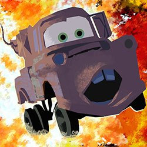
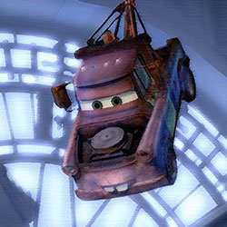

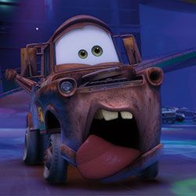
Number 95 Lightning McQueen is still a hotshot race car, but his rookie days are past him. Now a permanent resident of Radiator Springs, Lightning has become a bona fide worldwide celebrity as winner of four Piston Cups.His off-season is unexpectedly cut short when Mater inadvertently prompts Lightning to enter the World Grand Prix, a high profile, three-part exhibition race that will take him around the globe.

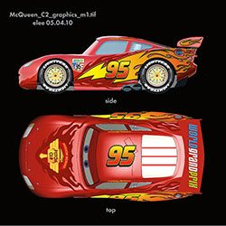


Finn McMissile is a master British spy. Though charming and eloquent, it’s his stealth maneuvering, intelligence, and years in the field that enable him to thwart unexpected attacks from bad guys and make quick daredevil escapes.
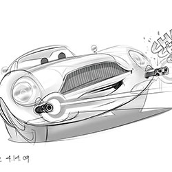
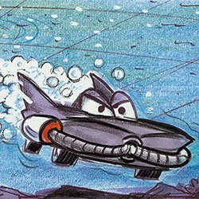
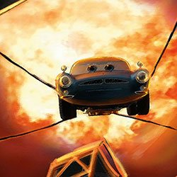
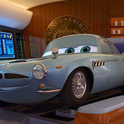
Francesco Bernoulli grew up in the shadow of the famous Monza racecourse in Italy, where he and his friends would sneak onto the track and race the famous Pista di Alta Velocita bank turn. He was an instant winner on the amateur circuit and soon became an international Formula Racer champion. The ladies love Francesco’s open wheels, youngsters look up to his winning spirit, and fellow racers envy his speed.
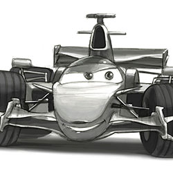
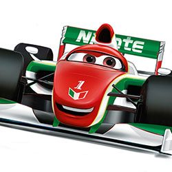
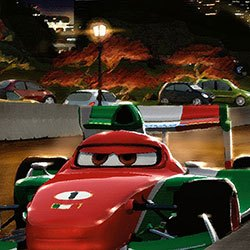
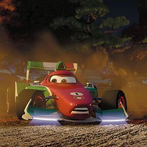
Holley Shiftwell is a beautiful young British desk agent turned rookie field spy stationed in Tokyo. Well educated and sharp, she knows every trick in the book—or rather, she relies on every trick in the spy manual. She’s armed with the latest state-of-the-art spy equipment imaginable, from hidden cameras and concealed weapons to a telescoping utility arm and a holographic pop-up display.

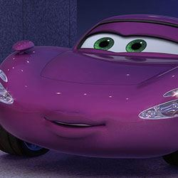
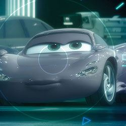

“I really wanted to start off with something that was the complete opposite of what the audience would expect from the sequel to Cars,” said Director John Lasseter. “People are expecting to see Lightning McQueen, Mater, stock car racing, Radiator Springs, Route 66, the Southwest…but instead, the first thing you see is ocean. And then there’s a boat. And out in the middle of the ocean, there’s a little car riding on this boat and he’s looking for another car. You’re thinking, ‘Wait a minute—what’s going on here?!'”
Setting the tone for the film’s fictional World Grand Prix, the opening race in Tokyo took inspiration from Singapore’s Formula One night race. “Having the Tokyo race take place at night let us showcase a really rich and beautiful range of light sources, from glowing lanterns to the amazing neon signs downtown to the chaos of light reflecting on the cars themselves,” said Director of Photography for Lighting, Sharon Calahan.
After adapting the Grand Prix races to the real cities of Tokyo and London, the filmmakers decided to create the Italian Riviera town of Porto Corsa from whole cloth. Though fictional, Porto Corsa proudly displays the influences of Vernazza, Genoa, Positano, Monte Carlo, and Portofino. “We wanted it to be our love letter to European racing and to Italy,” explained Co-Director Brad Lewis.
After jettisoning plans for a 24-hour endurance race through Paris, the filmmakers gave the City of Light a more mysterious role. Inspired by classic action-thriller films, they used Paris for a chase veering away from the postcard imagery of the usual lush travelogue backdrop. The Pixar team found inspiration in vintage photos of Paris’s old central market, Les Halles, to create an unexpected setting for the black market storyline.
London provided the Cars 2 art team’s biggest challenge, requiring over 50 miles of city streets and thousands of uniquely "car-ified" buildings exhibiting a wide variety of architectural styles. Along with celebrated landmarks like Big Ben and Buckingham Palace, the filmmakers got to make distinctively British characters out of such revered vehicles as Range Rovers, Jaguars, Minis, and the London double-decker bus.
A colorscript is a sequence of small pastel drawings or paintings used to emphasize color in each scene and establish a film's visual language.
DIRECTED BY JOHN LASSETER
CO-DIRECTED BY BRAD LEWIS
PRODUCED BY DENISE REAM
ASSOCIATE PRODUCER MARK NIELSEN
ORIGINAL STORY BY JOHN LASSETER, BRAD LEWIS, DAN FOGELMAN
SCREENPLAY BY BEN QUEEN
ORIGINAL SCORE COMPOSED BY MICHAEL GIACCHINO
STORY SUPERVISOR NATHAN STANTON
FILM EDITOR STEPHEN SCHAFFER, A.C.E.
PRODUCTION DESIGNER HARLEY JESSUP
SUPERVISING TECHNICAL DIRECTOR APURVA SHAH
PRODUCTION MANAGER JAKE MARTIN
SUPERVISING ANIMATORS SHAWN KRAUSE, DAVE MULLINS
DIRECTOR OF PHOTOGRAPHY-CAMERA JEREMY LASKY
DIRECTOR OF PHOTOGRAPHY-LIGHTING SHARON CALAHAN
CHARACTER SUPERVISOR SAJAN SKARIA, ROBERT MOYER
SETS SUPERVISOR JOHN HALSTEAD
SIMULATION SUPERVISOR CHRISTINE WAGGONER
EFFECTS SUPERVISOR GARY BRUINS
MOTION GRAPHIC EFFECTS SUPERVISOR MICHAEL FU
CHARACTER ART DIRECTOR JAY SHUSTER
SETS ART DIRECTION NAT MCLAUGHLIN
SHADING ART DIRECTION BERT BERRY
CROWDS ANIMATION SUPERVISOR ARIK EHLE
CROWDS TECHNICAL SUPERVISOR MICHAEL LORENZEN
GLOBAL TECHNOLOGY SUPERVISOR BENA CURRIN
RENDERING SUPERVISOR ALEXANDER KOLLIOPOULOS
SOUND DESIGNER TOM MYERS
CASTING BY
KEVIN REHER, C.S.A.
NATALIE LYON, C.S.A.
MATER LARRY THE CABLE GUY
LIGHTNING MCQUEEN OWEN WILSON
FINN MCMISSILE MICHAEL CAINE
HOLLEY SHIFTWELL EMILY MORTIMER
MILES AXLEROD EDDIE IZZARD
DON JOEL MURRAY
FRANCESCO BERNOULLI JOHN TURTURRO